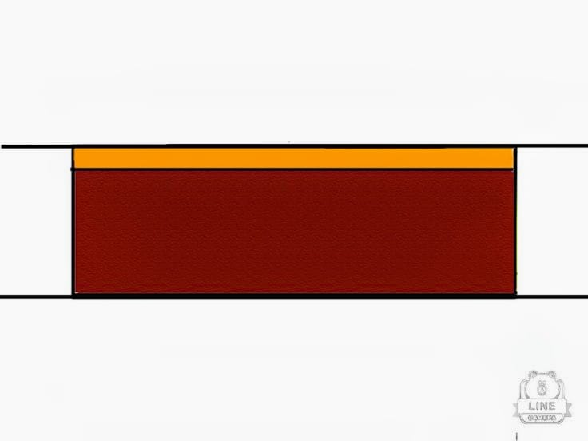

Image Lab — Gallery
Practice with <img>, srcset, <picture>, SVG, and accessibility
Responsive Image Gallery
Basmati rice — 5 kg bag.
Assorted Snacks Box
(WebP served when supported).
Delivery truck
Illustration of a delivery truck
Delivery truck (SVG inline with accessible title/desc).

Decorative divider
(not read by screen readers)
Submit Lab
Submit Lab